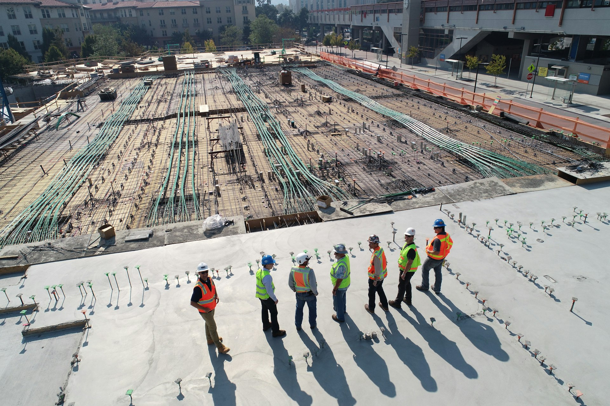

Our Story
Reliability, resilience and trust.
These foundational principles have led us, ensuring client-focused continued growth.

Our journey began in 2006 in Islamabad, and over nearly two decades we have built a robust reputation as one of the capital's trusted construction and real estate houses. A reputation of valuing long-term relationships over short-term gains. Our history is not merely about longevity; it is a testament to our steadfast dedication to the communities and clients we serve.
Recognizing innovation as key to progress, we pride ourselves on our pioneering spirit. Our early and comprehensive adoption of modern construction technology, structural design software and digital project tracking across all projects highlights our commitment to technological advancement and operational efficiency, setting industry standards and maintaining our leading edge.
As we look toward the future, our goal at GS Builder & Engineers is to ensure that every project we construct reflects our core values and expertise, while contributing to the advancement of a more sustainable Pakistan.
Project Completion Rate
Customer Satisfaction
Dedication
Trust
Innovation
Reliability
Building the skylines
of tomorrow.
To be Pakistan's most trusted name in construction and real estate — a company where engineering excellence, honest dealing and modern design come together to create communities that thrive for generations, from the footprints of the Margalla Hills to thriving societies across the capital.
- Pioneer quality-driven, sustainable construction
- Champion transparent, buyer-first property dealing
- Set the benchmark for on-time project delivery
Delivering more
than we promise.
To deliver safe, durable and affordable construction — and verified, fairly-priced property — through skilled engineers, quality materials and complete client support: from the first soil test to the final registry. Every family that trusts us with their investment deserves transparency at every step.
- Engineer every build to lifetime standards
- Verify every file before it reaches a client
- Support clients before, during & after the deal

Trusted partner for prominent
private and
public entities
Established in 2006, GS Builder & Engineers has earned a reputation as a trusted partner for families, investors, public institutions and private developers across Islamabad and Pakistan. We have played a pivotal role in delivering residential communities, commercial centers and infrastructure-linked projects for both government-affiliated bodies and major private sector clients.
Engineering excellence since 2006
GS Builder & Engineers has been one of the pioneers in the construction and engineering industry in Islamabad and across Pakistan since 2006. Over nearly two decades, we have played a significant role in shaping communities and skylines in the capital region, building a reputation associated not only with quality but also with efficiency and speed. We have successfully delivered hundreds of projects that have set new standards in the industry.
Corporate Social Responsibility (CSR)
At GS Group, Corporate Social Responsibility (CSR) is about more than building structures — it's about creating a lasting impact. From training future engineers to inspiring sustainability in schools and supporting employee wellbeing, our initiatives foster talent, eco-awareness, and a thriving workplace culture.
At GS Builder & Engineers, we believe that developing people and supporting communities are essential to building a sustainable future. Through our CSR initiatives, we invest in graduate development, sustainability, employee wellbeing, and community engagement to create positive long-term outcomes both within our organisation and across Pakistan. Built around four core pillars — Graduate Pathways, Seeds of Sustainability, Seeds of Care, and Employee Wellbeing — our programs support future talent, strengthen partnerships, and encourage responsible growth throughout the construction industry.
Graduate Pathways Program
Graduate Pathways is GS Contracting's structured graduate development initiative, designed to help emerging civil engineers transition from university into professional practice. Through practical project exposure, cross-department collaboration, and guided site-based learning, participants gain valuable industry experience across multiple disciplines within the organisation.
Seeds of Sustainability
Seeds of Sustainability introduces students across schools in Islamabad and beyond to sustainability-focused learning inspired by our own material-innovation journey. Through interactive projects and collaborative activities tailored to different stages of learning, the initiative encourages students to engage with eco-awareness, circular economy principles, material innovation, and creative problem-solving.
Seeds of Care
Seeds of Care reflects our commitment to community engagement, volunteering, and social impact. Through partnerships with local charities, healthcare organisations, and community initiatives, the program encourages employees to contribute their time, skills, and support to causes that create lasting positive impact across Islamabad and Pakistan.
Employee Wellbeing Program
Employee Wellbeing focuses on creating a positive, supportive, and engaging workplace. Through wellbeing initiatives, awareness campaigns, learning opportunities, and employee engagement activities, we aim to support the health, development, and overall wellbeing of our people throughout their careers.
Ready to Build Smarter?
Tell us about your project — a senior engineer will reply within one working day, and your first consultation is always free.